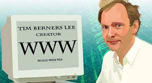

www
Todos los que hemos navegado en internet podemos reconocer el famoso
“www”, pero ¿realmente sabemos lo que es?, talvez no tengamos claro lo que
es, pero a continuación aclararemos eso: La World Wide Web, también conocida
como WWW, W3 o Web, es un sistema de vinculación de sitios web públicos a
los que se puede acceder a través de Internet. La web no es lo mismo que
Internet: la web es una de las muchas aplicaciones creadas en Internet.

¿Quién la creo?: Tim Berners-Lee sugirió la arquitectura de la World Wide Web.
Creó el primer servidor web (servidor en-US), el primer navegador de Internet
(browser) y la primera página web en su computadora en el laboratorio de
investigación de física CERN en 1990. En 1991, anunció la creación del Grupo
de Discusión de Hipertexto Alternativo, marcando el momento en que la Web se
hacía pública.

Internet de las Cosas (IoT)

El Internet de las cosas (IoT) es el proceso que permite conectar los elementos físicos cotidianos al Internet: desde los objetos domésticos comunes, como las bombillas de luz, hasta los recursos para la atención de la salud, como los dispositivos médicos; las prendas y los accesorios personales inteligentes; e incluso los sistemas de las ciudades inteligentes. Los dispositivos del IoT que se encuentran dentro de esos objetos físicos suelen pertenecer a una de estas dos categorías: son interruptores (es decir, envían las instrucciones a un objeto) o son sensores (recopilan los datos y los envían a otro lugar).
Acceso Digital Global

El acceso digital, es la amplia participación en los medios electrónicos. El acceso digital afecta la cultura, los métodos de enseñanza y otras instancias de la sociedad. El acceso digital comprende permitir que una mayor cantidad de personas puedan tener acceso a la tecnología, tener actitudes y acciones que permitan el acceso a todos por igual y que nuestras acciones tomen en cuenta a las personas que nos rodean. Por ejemplo, si vamos a hacer una fiesta y las invitaciones se repartirán de manera digital debemos tomar en cuenta que quizá haya personas que no podrán tener acceso a ella porque no tienen los medios para accederla ya sea porque no tienen internet o no tienen un dispositivo tecnológico para poder verla.
literacia digital mejor conocida por alfabetización digital es la habilidad para utilizar los medios tecnológicos de manera segura y responsable. De la misma manera en que hay personas que no tienen acceso a las tecnologías también conocida como brecha digital, hay personas que tienen acceso a ella, pero no conocen sus riesgos o no saben utilizarla. Un ciudadano alfabetizado digitalmente es aquel que tienen la habilidad para utilizar la tecnología de manera segura y responsable.